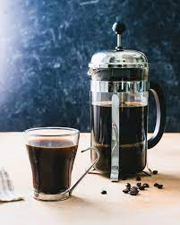

French Press Coffee

French press produces a rich, flavourful brew. The grounds are steeped in hot water for 4-5 minutes and then filtered.
Ingredients
- ground coffee (medium grind)
- filtered water (95 C)
- french press
Steps
- add two tablespoons of ground coffee into the french press
- pour a little water and allow the grounds to bloom for 30 seconds
- pour the remaining water
- wait for five minutes, and then slowly plunge the filter
- pour and serve